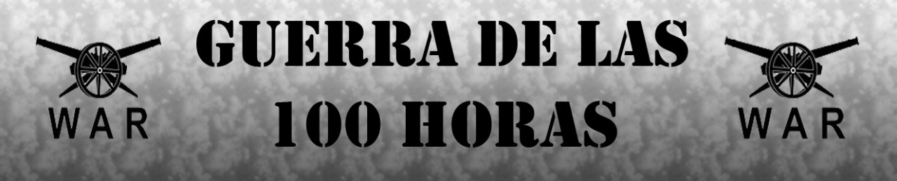
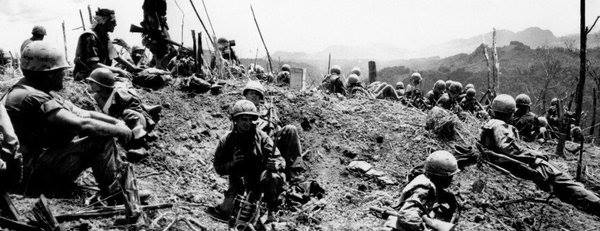
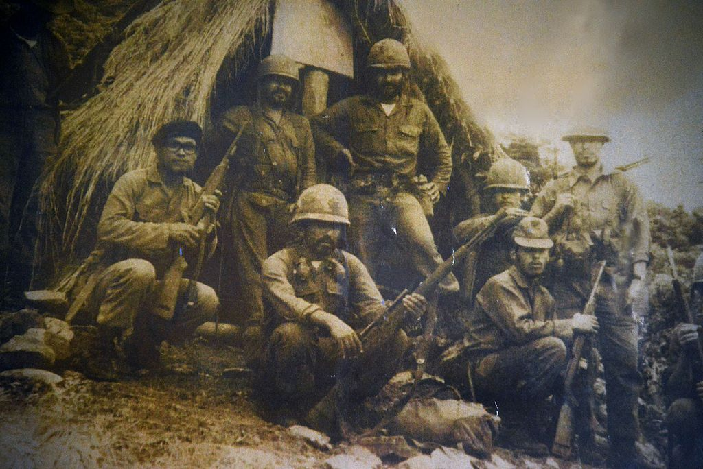

| Historia | video |
|---|
La Guerra de las 100 horas
La guerra de las 100 horas o tambien mas conocida como la Guerra de futbol esta guerra fue entre Honduras y El salvador esto fue un gran conflicto armado sucedio entre el 14 y el 18 de julio de 1969 este hecho fue realizado entre dos republicas la de El Salvador y Honduras .
Debedio a que sucedio una coincidencia con un partido de futbol donde se enfrentaba la sleccion de El Salavador y Honduras un 26 de junio de 1969 con motivo de la clasificacion a la copa del mundo de 1970. El nombre de la Guerra del futbol lo puso un reportero polaco llamado Ryszard Kapuscinski y el reportero Bob Dickens, quienes ellos no dieron cuenta de las causas reales que provocaron tal conflicto en Centroamerica.
Durante estaguerra se pudo evidenciar tensiones politicas que eso los llevo al conflicto armadofue una guerra breve los combates duraban 4 dias y en los dos bandos ocupaban aviones de combate que eran obsoletos parav ess epoca fue la ultima ocacion donde participaron acciones belicas los aparatos Que eran estadounidense ( Douglas C-47 Skytrain) como bombarddero que era improvisado por ambos bandos.
|  |  |
|---|
CONSECUENCIAS |
|---|
El gobierno de El Salvador anunció que los migrantes salvadoreños que vivían en Honduras fueron atacados el 15 de junio luego de la clasificación de su selección al Copa Mundia de Futbol " Mexico 1970" y así mismo alertó que cerca de 12.000 migrantes en situación de riesgo ingresaron al territorio salvadoreño pero en situación de evacuación. Ante los constantes pedidos de la población salvadoreña que llamaban a romper las relaciones diplomáticas con Honduras, el gobierno salvadoreño declaró inicialmente un "estado de emergencia" el 23 de junio y convocó al personal de reserva.
Tres días después, en la noche del 26 de junio de 1969, el gobierno salvadoreño proclamó la ruptura oficial de relaciones diplomáticas con Honduras. Esta decisión fue tomada con el argumento de que el gobierno hondureño "estaba persiguiendo a los salvadoreños que vivían en ese país”.
En respuesta a esto, al día siguiente 27 de junio el gobierno de Honduras anunció que también cortaba relaciones diplomáticas con El Salvador además de que tomaría medidas de defensa.
Además de los incidentes aéreos, algunas unidades de los ejércitos de ambos países habían librado durante un corto periodo de tiempo de 20 minutos un enfrentamiento a tiros al otro lado de la frontera. El Ministerio de Relaciones Exteriores de El Salvador envió una carta a la Organización de los Estados Americanos (OEA) condenando las acciones de Honduras. Tras el enfrentamiento entre los dos países, la OEA convocó una junta directiva el 4 de julio para discutir acciones futuras.
El 9 de julio, el gobierno de Honduras anunció que el Ejército de El Salvador atacó un pueblo en el Departamento de Intibuca en Honduras y se enfrentó a la policía local. Doce casas particulares fueron incendiadas, pero no se encontraron víctimas. Este sería el segundo enfrentamiento entre los dos ejércitos después del 3 de julio.
El 12 de julio, una unidad militar del Ejército de El Salvador chocó con el Ejército de Honduras en el punto donde invadió el territorio de Honduras por 10 km. En un tiroteo, 14 soldados salvadoreños murieron en acción.
Temprano en la mañana del 13 de julio, el gobierno de El Salvador anunció que las dos tropas se enfrentaron en una batalla de tres horas en El Poi, cerca de la frontera. El gobierno de Honduras anunció que la batalla hirió a civiles. La Junta de la OEA decidió enviar fuerzas de paz compuesta por siete países, entre ellos (Argentina, Ecuador, Costa Rica, Dominica, Nicaragua, Guatemala y Estados Unidos) para evitar un conflicto militar a gran escala entre los dos países. En tanto, el canciller de Honduras, Fidel Durón, condenó en la junta las acciones de El Salvador, pero El Salvador señalaba que la condena era una cortina de humo para camuflar la expulsión masiva de los salvadoreños.
{kind=link}